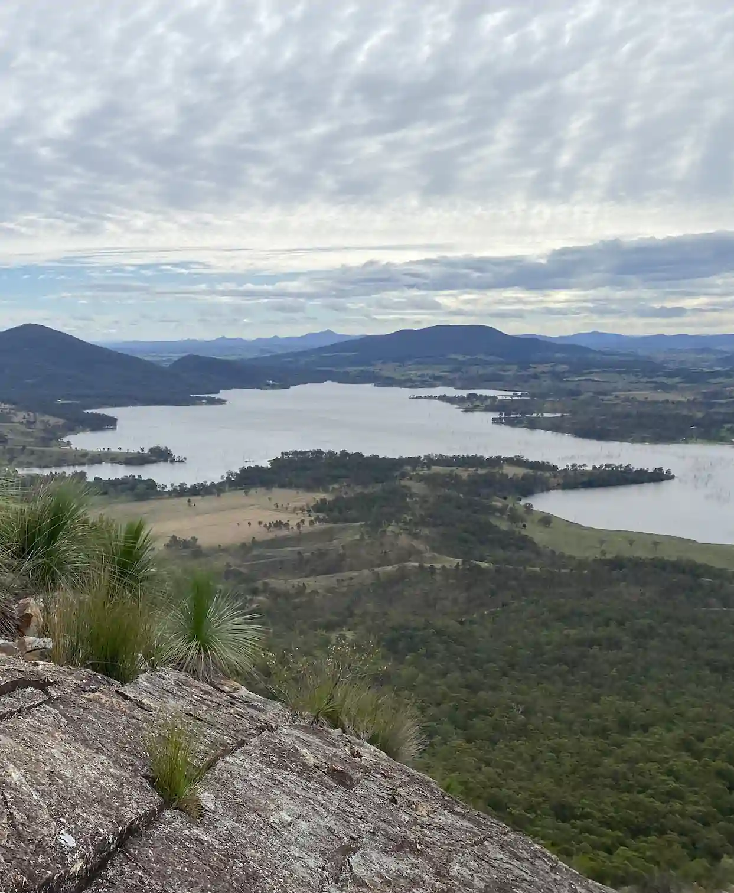

Header
| Area: | 587,041 sq km |
| Population: | 27,691,018 |
| Capital: | Antananarivo |
| Languages: | Malagasy, French |
| Currency: | Malagasy Ariary |
| Time Zone: | UTC+3 |
| Calling Code:: | +261 |
| Internet TLD: | .mg |
| Temperature: | 10°C |
| Conditions: | Partly Cloudy |
| Wind: | 5 km/h |
| Wind Chill: | 9.38°C |